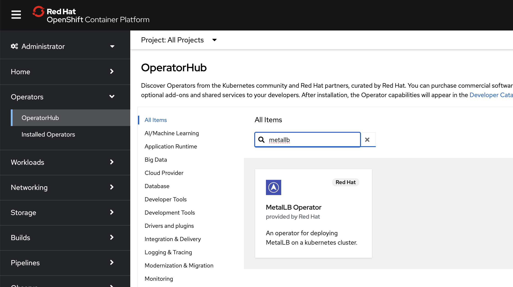
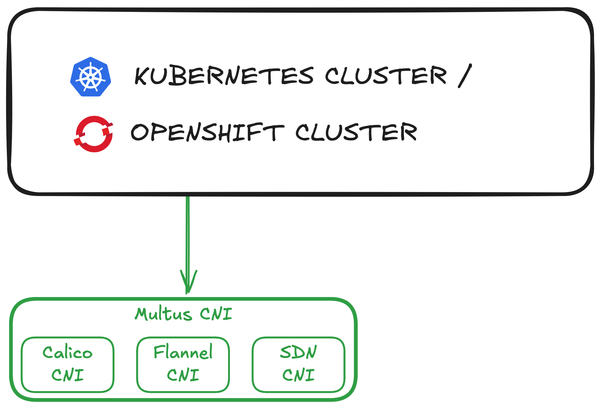
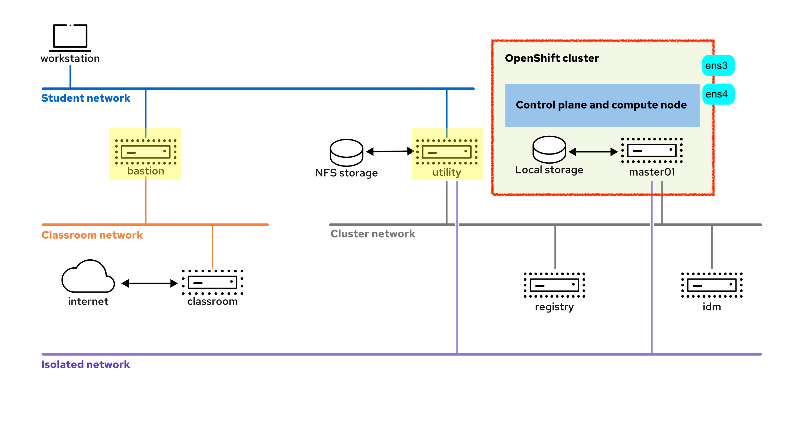

5. Expose SNI Application
1. LoadBalancer Services¶
k8s Ingress / OC Route
Both k8s Ingress and OC Route are mainly designed to HTTP/HTTPS services. To expose non-HTTP services, you use LoadBalancer service
k8s provides different service（different service types check here）. Loadbalancer services require the use of network features that are not available in all environments.
For example, cloud providers(such as IBM Cloud or G-cloud) typically provide their own load balancer services. These services use features that are specific to the cloud provider.
If you run a Kubernetes cluster on a cloud provider, controllers in Kubernetes use the cloud provider's APIs to configure the required cloud provider resources for a load balancing service. On environments where managed load balancer services are not available, you must configure a load balancer component according to the specifics of your network - for example, MetalLB:
MetalLB¶
MetalLB 是一个开源的负载均衡器解决方案(load balancer component)，专为没有内置云负载均衡器的集群设计。比如bare metal cluster, clusters on hypervisors(虚拟机管理程序) 或私有云.
该 Operator 的名字本身也带 “Metal”，充分说明了它的使用环境
MetalLB is an Operator that you can install per Operator Lifecycle Manager:

step-by-step
- Deploy MetalLB: Ensure MetalLB is installed and running in the cluster.
- Create the
IPAddressPoolresource - Configure MetalLB Advertisement: create either
L2Advertisement（L2广播） orBGPAdvertisement（BGP广播） resource - Create a LoadBalancer type
serviceand MetalLB will allocate IPs from the specified pool.
Example: createserviceof the LoadBalancer type to expose non-HTTP services outside the cluster.After you create the service, the load balancer component(such as MetalLB) updates the service resource with information such as the public IP address where the service is available. You can get the IP address by:apiVersion: v1 kind: Service metadata: name: example-lb namespace: example spec: ports: - port: 1234 protocol: TCP targetPort: 1234 selector: name: example type: LoadBalancer[user@host ~]$ kubectl get service NAME TYPE CLUSTER-IP EXTERNAL-IP PORT(S) AGE example-lb LoadBalancer 172.30.21.79 192.168.50.20 1234:31265/TCP 4m7s <!-- or --> [user@host ~]$ oc get example-lb -o jsonpath="{.status.loadBalancer.ingress}" [{"ip":"192.168.50.20"}]
⚠️ PORT(S)的格式是 外部端口:内部端口/协议 (1234:31265/TCP)
You can now connect to the service on the 192.168.50.20:1234 address. You can test it in several ways:
ping 192.168.50.20:1234
# or
nc -vz 192.168.50.20 1234
MetalLB's 两种模式
- Layer 2 模式：使用 ARP/NDP 通告，将服务 IP 广播给同一子网内的所有主机。这种模式适用于简单网络拓扑。
- BGP（Border Gateway Protocol）模式：与网络中的路由器对等，动态宣告服务 IP。这种模式适合更复杂的网络环境，支持更高级的流量路由和负载均衡。
Configure MetalLB Advertisement
You can use IPAddressPools resource for further configuration, for instance, to restrict the available load balancer IP addresses to 192.168.50.20 and 192.168.50.21. Example:
apiVersion: metallb.io/v1beta1
kind: IPAddressPool
metadata:
name: my-ip-pool
namespace: metallb-system # Ensure this is the namespace where MetalLB is deployed
spec:
addresses:
- 192.168.50.20-192.168.50.21 # The range of IP addresses for the pool
⚠️ To bind the IPAddressPool to MetalLB's AddressPool settings, you need to configure a L2Advertisement or BGPAdvertisement
Check the IPAddressPools defined in ALL Namespace:
oc get ipaddresspools.metallb.io -A
2. Multus Secondary Networks¶
Kubernetes manages a pod network and a service network:
- The pod network provides network interfaces to each pod, and by default, provides network communication between all pods.
- The service network provides stable addressing for services that run on pods. Furthermore, other facilities provide mechanisms to expose services outside the cluster.
However, in some cases, connecting some pods to a custom network could be useful - The Multus CNI (container network interface) plug-in helps to attach pods to custom networks. The custom networks could be internal OR external.
step-by-step
- install Multus plugin
- configure Additional Network - 2 options:
- NetworkAttachmentDefinition
- Network
- use Additional Network in a Deployment by annotating it
安装 Multus 插件¶
Multus CNI 插件 允许集群中的 Pod 使用多个网络接口。它充当一个元插件/meta-plugin，能够将多个 CNI 插件/plugin（如 Flannel、Calico、SR-IOV 等）整合在一起，赋予每个 Pod 连接到多个网络的能力，也就是说 Pod 可以拥有多张网卡（拥有多个ip）。安装:
kubectl apply -f https://raw.githubusercontent.com/k8snetworkplumbingwg/multus-cni/master/deployments/multus-daemonset.yml
更多信息见Multus Doc
Multus CNI vs Default CNI in cluster
- The default CNI plugin (like
CalicoorFlannel) continues to function as the primary network provider for the cluster, handling the standard networking features such as Pod-to-Pod communication and IP management.- k8s usually uses
CalicoorFlannelas default - oc uses
SDNorOVN-Kubernetes
- k8s usually uses
- Multus meta-plugin adds support for secondary networks by allowing Pods to connect to additional networks 👉 but it doesn't replace the default network functionality.
meta-plugin
meta-plugin is a plugin that can call multiple other plugins.
Multus CNI Plugin is a meta-plugin. 其他CNI 插件可通过Operators来安装。 比如 Kubernetes NMState operator 或 SR-IOV (Single Root I/O Virtualization) network operator。他们与Multus CNI的关系如图:

使用场景
- 为了安全：用户可以将敏感的流量发送到专为安全考虑而管理的网络平面，也可隔离不能在租户或客户间共享的私密数据。
- 为了性能：用户可以在两个不同的平面上发送流量，以管理每个平面上流量的多少。
配置 Secondary Network¶
Two methods to configure secondary networks:
- create a
NetworkAttachmentDefinitionresource. - update the configuration of the cluster network resource
Method 1: create NetworkAttachmentDefinition¶
apiVersion: k8s.cni.cncf.io/v1
kind: NetworkAttachmentDefinition
metadata:
name: example # Network name
spec:
config: |-
{
"cniVersion": "0.3.1",
"name": "example", # Network name
"type": "host-device", # 🌟 Network Type
"device": "ens4",
"ipam": { # Additional network configuration
"type": "dhcp"
}
}
🌟 Network Type
You can create network attachment definitions of the following types:
- Host device: Attaches a network interface to a single pod. 👉 当某个Deployment只有一个replica的时候适用
- Bridge: Uses an existing bridge interface on the node, or configures a new bridge interface. The pods that are attached to this network can communicate with each other through the bridge, and to any other networks that are attached to the bridge.
- IPVLAN: Creates an IPVLAN-based network that is attached to a network interface.
- MACVLAN: Creates an MACVLAN-based network that is attached to a network interface.
Method 2: update Network¶
You can also create the same network attachment by editing the cluster network operator configuration:
apiVersion: operator.openshift.io/v1
kind: Network
metadata:
name: cluster
spec:
...output omitted...
additionalNetworks:
- name: example
namespace: example
rawCNIConfig: |-
{
"cniVersion": "0.3.1",
"name": "example",
"type": "host-device",
"device": "ens4",
"ipam": {
"type": "dhcp"
}
}
type: Raw
ipam
The IP Address Management (ipam) CNI plug-in provides IP addresses for other CNI plug-ins.
You can provide more complex network configurations in the ipam key. dhcp (Dynamic Host Configuration Protocol) or static For example:
"ipam": {
"type": "static",
"addresses": [
{"address": "192.168.X.X/24"}
]
}
使用Secondary Network¶
Warning
Network attachment resources are namespaced, and are available only to pods in their namespace.
To use the Secondary Network, simply add annotation to the deployment:
apiVersion: apps/v1
kind: Deployment
metadata:
name: example
namespace: example
spec:
selector:
matchLabels:
app: example
name: example
template:
metadata:
annotations:
k8s.v1.cni.cncf.io/networks: example
labels:
app: example
name: example
spec:
...
Multus updates the k8s.v1.cni.cncf.io/network-status annotation with the status of the additional networks.
[user@host ~]$ oc get pod example \
-o jsonpath='{.metadata.annotations.k8s\.v1\.cni\.cncf\.io/network-status}'
[{
"name": "ovn-kubernetes",
"interface": "eth0",
"ips": [
"10.8.0.59"
],
"mac": "0a:58:0a:08:00:3b",
"default": true,
"dns": {}
},{
"name": "non-http-multus/example",
"interface": "net1",
"ips": [
"1.2.3.4"
],
"mac": "52:54:00:01:33:0a",
"dns": {}
}]
There are 2 networks attached to the pod:
ovn-kubernetes: the primary network attachment managed by the OVN-Kubernetes CNI plugin, which is the default network(indicated by"default": true) for the OpenShift cluster.non-http-multus/example: a secondary network attachment created using the Multus CNI.
Exercise Illustration¶
5.2 NetworkAttachmentDefinition¶
You can get the NetworkAttachmentDefinition resource by:
oc get networkattachmentdefinition.k8s.cni.cncf.io
5.4¶
Background: DO280 Course Infrastructure

Both bastion and utility VM act as Router:
bastionconnects student network and classroom networkutilityconnects student network and cluster network
Cluster's Network Interfaces¶
To check the IP of a node, login as admin. 在 OpenShift 集群中的 master01 节点上启动一个调试容器.
# -- 是一个分隔符，用于区分 oc debug 命令的选项和要在目标节点上执行的命令。
oc debug node/master01 -- chroot /host ip addr
ens3: cluster main network interfaceens4: an additional network interface
Output:
2: ens3: ...
3: ens4: ... inet 192.168.51.10/24 brd 192.168.51.255 ...
Warning
bastion machine doesn't has access to ens4, utility machine has access to ens4 by doing:
[student@workstation ~]$ ssh utility